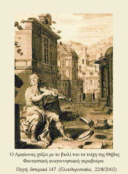

| Κυκλώπεια τείχη στη μυθολογία  Μύθοι και θρύλοι σε όλο τον κόσμο μιλούν για το χτίσιμο «κυκλώπειων τειχών» με τη βοήθεια της μουσικής. Κατά τον Όμηρο, με τον τρόπο αυτό χτίστηκαν τα πυργωτά τείχη των Θηβών, από δυο δίδυμα αδέλφια, παιδιά του Δία και της Αντιόπης, τον Αμφίωνα και τον Ζήθο, βασιλιά των Θηβών (Οδ., λ, 260-264). Ο Ησίοδος αναφέρει πως, όταν χτίζονταν τα τείχη, ο Αμφίωνας έπαιζε τη λύρα που του είχε χαρίσει ο Ερμής και οι πέτρες, μαγεμένες από τη μουσική, μετακινούνταν και έμπαιναν μόνες τους στη θέση τους. |
||